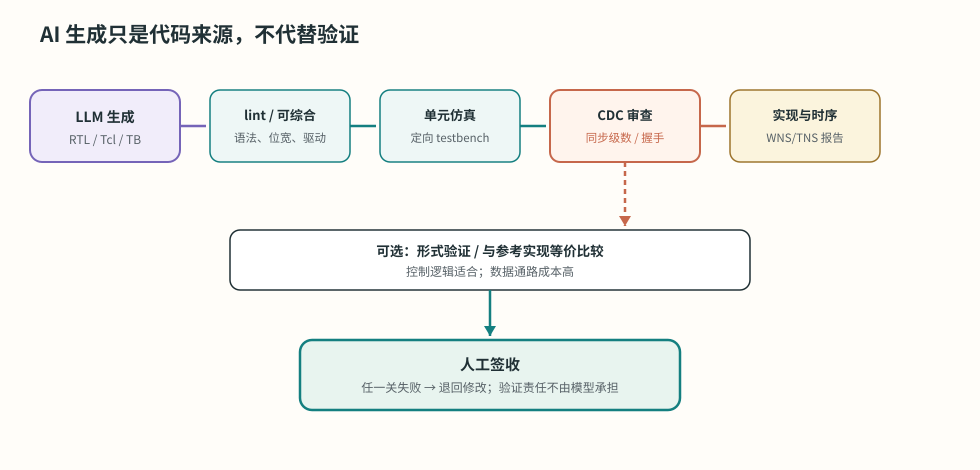
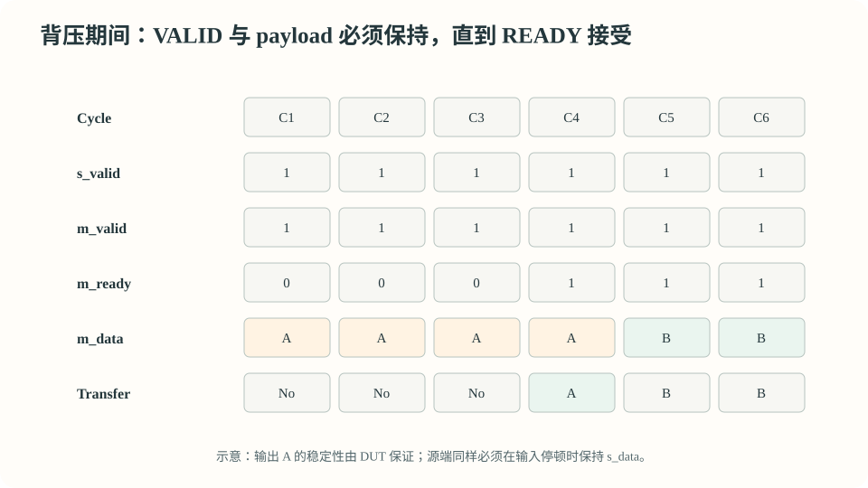
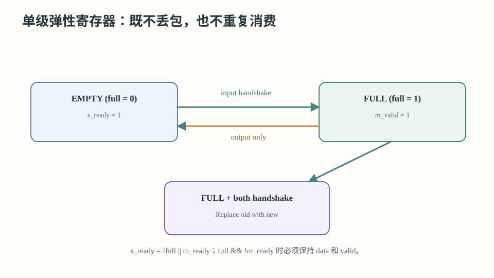
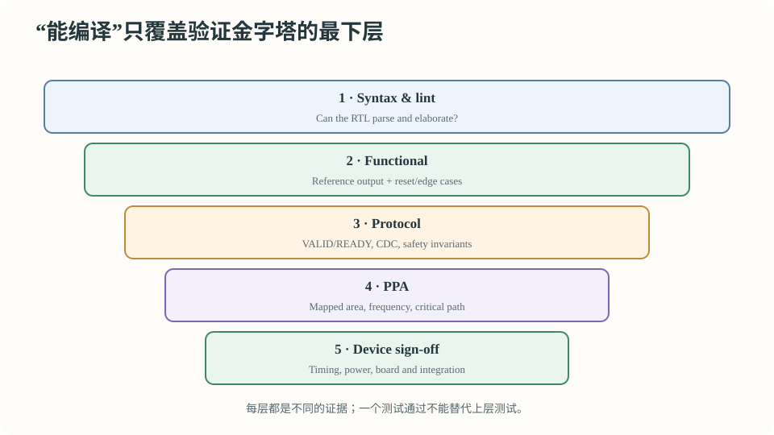

AI 辅助的 FPGA 开发：谁能写，谁负责验证
LLM 能很快写出接口模板，但它不承担正确性责任。真正的工作不是“让它写”，而是把需求说清楚，并用仿真、lint 与时序检查把关它的输出。
01 / AI 能做什么、不能做什么
大语言模型（LLM）已经在日常开发里被用来生成 RTL。它擅长的是模式清晰、接口明确的模板代码，不擅长的是需要物理直觉与时序保证的部分。把这条分界线看清楚，比争论“AI 能不能写 Verilog”有用得多。
| 适合交给 LLM | 必须人工判断 |
|---|---|
| 标准接口模板：UART/SPI/I2C 移位、AXI4-Lite 寄存器读写 | 跨时钟域同步与握手（第 13 章） |
| 重复性的信号连接、译码器、CRC 校验 | 精确时序行为的状态机与协议（第 19、22 章） |
| testbench 骨架与激励生成 | 验证覆盖：是否测到了所有角落情形 |
| 约束（XDC/SDC）的语法模板 | 约束是否正确描述真实时钟与 I/O 时序（第 14 章） |
关键区别在于责任：LLM 生成的东西在仿真里“看上去对”不等于硬件正确——它没有亚稳态、没有布线延时、没有建立/保持的概念。所以本章的立场是：可以让 AI 写，但验证与签收始终由人负责。
02 / 把需求写成可综合的 prompt
LLM 的输出质量与输入规格直接相关。一个模糊的需求（“写个 SPI 模块”）会得到一份通用但可能与你的工程不兼容的代码。可综合的 prompt 应该像一份接口契约：
- 模块名与端口表：每个信号的名称、方向、位宽、复位值。
- 时钟与复位：单时钟还是多时钟；同步复位还是异步复位；复位是高有效还是低有效。
- 协议细节：如 SPI 的 CPOL/CPHA、字节序、帧格式；AXI 的通道与握手约定。
- 状态与行为：需要哪些状态、转移条件、异常/错误分支。
- 约束与目标：目标时钟周期、面积优先还是吞吐优先。
把“约束”写进 prompt 并不保证 LLM 能满足它，但能让生成的代码有一份可对照的契约。生成后你逐项核对这份契约，就能把“跑得通”与“符合规格”分开。
03 / 审查 LLM 输出的检查关
对 LLM 生成的 RTL，建议按固定顺序过几道关，每道关都有客观依据：
- lint / 语法与可综合性：先用工具扫除不可综合构造、位宽不匹配、未驱动的信号。
- 单元仿真：用定向 testbench 验证接口契约与关键场景（第 8 章）。
- CDC 审查：凡跨时钟的路径，逐条追问“这里用了几级同步器？是不是多比特需要握手/格雷码？”（第 13 章）。
- 时序与约束：在目标器件上综合实现，看报告中的 WNS/TNS 与扇出（第 25 章）。
- 形式/等价检查（可选）：对控制逻辑可用形式验证或与参考实现做等价比较。

生成 ready/valid 接口时，光看“功能对了”还不够：还要验证背压下 payload 是否保持稳定，以及弹性缓存在同时入队/出队时的行为。仓库中的 examples/rtl/ready_valid_slice.v（16 位、单 entry、单时钟、低有效同步复位）就是这类可回归的小模块，对应的 examples/tb/tb_ready_valid_slice.v 用定向与随机顺序覆盖了这些场景。


04 / 可验证的工具事实：Tcl 与 MCP
在讨论“AI 工具链”时，先把可验证的事实与预测分开。两个确定的事实：
- Vivado 的功能可以用 Tcl 脚本驱动。 从建工程、增 IP、跑综合到写出报告，都有对应的 Tcl 命令，官方命令参考是 UG835。这意味着“让 LLM 生成 Tcl 脚本”是一个可落地的方向：脚本的正确性由能不能跑通、结果对不对来判定。
- MCP（Model Context Protocol）是一个开放的协议，用于把外部工具/数据源的能力暴露给 LLM 应用（见 modelcontextprotocol.io）。用 MCP 服务器封装一个 EDA 工具，是已文档化的集成模式。
但“有协议”不等于“有成熟产品”。具体哪些工具已经接入、覆盖了哪些命令、准确率如何，都会随时间变化，本文不背书任何具体产品，也不给出成熟度或准确率数字。判断依据应该是可复现的：在你自己工程里跑一遍，看命令是否生效、结果是否正确。
05 / 为什么 CDC、时序与覆盖率仍靠人工
这三类问题有一个共同点：它们不在功能里的“值”上，而在物理与概率上。LLM 按模式生成代码，很难自己意识到这些约束。
- CDC。 单个异步控制信号至少需要两级同步器才能把亚稳态影响降到可接受的概率；多比特总线逐位同步并不能保持一致性，需要用握手或格雷码（第 13 章）。这些是设计规则，不是代码风格。
- 时序。 一段语法正确的 RTL 能不能在目标频率收敛，取决于组合级数、扇出、布线，必须看实现报告；LLM 看不到这些数据（第 25 章）。
- 验证覆盖率。 “仿真过了”只能说明测试向量覆盖的情形过了；没测到的角落（异常分支、接口违约、复位中途）仍是空白。需要有人决定测什么。
AMD 的方法学文档（UG949）把 CDC 与设计约束列为需要显式方法学处理的部分，而不是综合工具能自动扳正的。因此即使 LLM 写代码，这些方法学检查也不能省。
06 / 实战：审查一段生成的同步器
需求（prompt）：把时钟域 A 的一个电平信号 async_in 安全地引入时钟域 B（clk_b），低有效异步复位。
一份“看起来对”但错误的生成：
// 错误：只有一级触发器，不是同步器
reg sync_reg;
always @(posedge clk_b or negedge rst_n) begin
if (!rst_n) sync_reg <= 1'b0;
else sync_reg <= async_in; // 单级无法可靠抑制亚稳态
end为什么错：只用一个触发器，前面级的亚稳态可能直接传给下游。仿真看不出问题（仿真没有亚稳态），但真实硅片上有概率传播。正确的最小形式是两级同步器：
// 正确：两级同步器（单比特电平）
// 注意：async_in 必须是单比特、且变化缓慢（相对于 clk_b）
reg [1:0] sync_ff;
wire sync_out = sync_ff[1];
always @(posedge clk_b or negedge rst_n) begin
if (!rst_n) sync_ff <= 2'b00;
else sync_ff <= {sync_ff[0], async_in};
end这段代码仍然不足以处理全部情形：它只适合慢变化的单比特电平。若 async_in 是脉冲（事件）或是一个多比特总线，就需要握手或打包同步（第 13 章）。这就是为什么“AI 写 CDC”总需要人工审查——正确性取决于信号的语义，而不仅是代码形状。
07 / 边界与可验证条件
- 本文不给出任何 accuracy 或“xx% 的代码可用”的数字。 这类评测结论依赖模型版本、prompt 与任务集，很快过期，不能当作稳定事实引用。
- “自然语言 → 比特流”这类预测属于判断，不是数据。 可验证的是当下的工具能力（如 Tcl 可脚本化、MCP 是开放协议）；未来何时成熟没有可引用的依据。
- LLM 输出必须过完检查关才签收。 尤其 CDC、约束与验证覆盖率，必须由人负责（第 13、14、25 章）。
- 本章不背书任何具体 AI 产品或厂商集成的准确率。

思考练习：为什么不能拿某个模型“xx% 的代码可直接使用”作为设计依据？
这类结论强依赖模型版本、prompt 与任务集，会很快过期，不是稳定事实。可验证的是当下的工具能力（如 Tcl 可脚本化、MCP 是开放协议）。更重要的是，LLM 生成的 RTL、约束与验证代码必须过完人的检查关才能签收，尤其是 CDC、时序约束与覆盖率（第 13、14、25 章）。